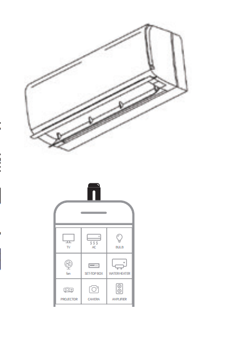

产品 工作 原理： 本产品 提供手机发送红外线的 硬件 功能，而 APP 中包含海量家电的遥控码， 手机正确插入连接本产品后， 您需要把正确的码找出来 保存即可控制家电。
1. 插入 连接 遥控器配件
打开下载好的 App ，将遥控配件插入手机的充电接口 MicroUSB 或者 Type-C 接口， App 识别配件成功后，屏幕会有提示信息弹出。可以选择相关设置，下次手机插入遥控器，会自动打开APP
（ 问题图标★ 问题： 如果插入安卓 遥控器 没反应， 1 . 如果是OPPO、vivo、一加等手机，部分手机务必请手动在设置中打开 OTG 功能，并确认手机是否支持 otg 功能 2. 拿掉厚的手机壳重新插拔 3. 用其他安卓手机试试，排除手机本身问题 ）

2. 适配红外 品牌 家电 ( 只需匹配一次 )
a ） App 中确认 遥控器和手机 已经成功 连接 后，点击 ” 遥控 “ 页面中的 ’ 添加遥控器 ’ 按钮，或者左上角的按钮；进入 ” 遥控器设备类型 “ 页面。
b ）选择家电的电器类型 以及家电品牌
c ） 同一个品牌下有多种型号电器， 在匹配页面中，需要 将遥控器 对准家电，逐一的点击页面的遥控器按键 看家电是否有反应。 匹配正确， 家电同时也会有响应，则在页面上点击 ” 有响应 “ ， 如果家电无响应，则在页面上点击 ” 无响应 “ 。 如果任何一个无响应，则会切换到下一套红外码重新对码，然后从第一个按钮开始点击。 所有列出的 1 -4 个按键 点击后每个都有响应，则匹配 最为精准。
匹配中， 3/20 代表该品牌总共有2 0 套遥控码，您正在匹配第3套。如果所有匹配完，家电均没有响应。则检查家电电源是否插好 或开机再匹配。
问题图标★ 问题： 1 . 如果家电没反应，请确认按键时遥控器的灯 有没有闪，有闪才证明有红外码发出。 按键没闪，则证明未连接好 2. 检查家电的插电是否正确并将遥控器头对着家电 2 米范围内 3. 如果所有码都试过没有反应，可能不支持该品牌型号，请在 app 中反馈， 我们将 后续增加补充
3. 保存 遥控器
匹配成功后，自动保存遥控器，下次可以直接使用。（还有更多功能，请在APP中查看）
常见问题
本产品是红外遥控产品，只支持红外遥控的家电，不支持蓝牙，2 .4Ghz 等其他频段遥控
本产品包含全球的码库，只需在app中选择对应家电品牌 即可
不可以，本产品其实和家里的普通遥控器类似，只是和手机结合有更广泛的码库，但自身没有联网功能
如果不能遥控家电，首先要确认是产品连接的问题，还是家电没有匹配的问题。1）如果手机APP按任意遥控按键，产品指示灯有亮，则证明产品连接没有问题。如果没有亮，则确认是否插好，安卓机确认是否打开OTG 2 ） 如果产品指示灯有亮，则请选择正确的家电类型和品牌进行匹配，如果不行，可更换搜索型号查找（型号一般在家电的产品铭牌上面有）。如果还是不行，则可能是我们app码库没有，请反馈给我们，并试用其他家电遥控。